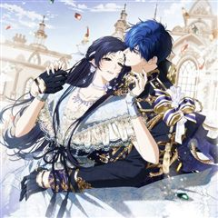

카카오웹툰 추천 인기 순위 TOP 30
카카오웹툰에서 지금 연재 중인 작품을 카카오웹툰 공식 인기 순위 순서로 모았어요. 네이버웹툰·카카오웹툰·레진코믹스에서 조건에 맞는 작품 944개 중 인기 순으로 30개를 골랐어요. 인기 TOP 3: 엄마가 계약결혼 했다, 관존 이강진, 픽 미 업!
2026-10-22 기준 · 성인 작품 제외
내 취향으로 더 좁혀서 추천받기 →-
1
 카카오웹툰
카카오웹툰엄마가 계약결혼 했다
리리카는 술주정뱅이 어머니를 모시고 하루하루 먹고 사는 빈민가의 소녀다. 그러던 어느날...... “꺄악, 뜨거워! 싫어!” 어머니가 비명을 지르며 잠에서 깨어나더니, “리리,살아있구나, 어려졌니?” 엉뚱한 소리를 하시고 “오늘이 며칠이지?” 정신을 못 차리시더니 “이럴수가, 돌아왔어…
힐링로판육아물카카오웹툰에서 보기 → -
2
 카카오웹툰
카카오웹툰관존 이강진
미친놈인가? 아니면 흔한 관심종자인가? 사람의 다름을 이해 못 하는 제자 이강진. 그리고 그걸 이해시켜주고자 하는 스승 곽노. 두 사제師弟의 따뜻한 휴먼스토리.
액션성장물카카오웹툰에서 보기 → -
3
 카카오웹툰
카카오웹툰픽 미 업!
그 누구도 던전의 끝까지 오르지 못한 극악의 난이도를 자랑하는 모바일 가챠 게임 <픽 미 업!(Pick me up!)> 마스터 오브 마스터라 불리는 세계 랭킹 5위의 마스터 '로키'는 던전을 깨던 중 정신을 잃게 된다. 깨어나 보니 레벨도 1, 등급도 1성인 <픽 미 업!> 속 영웅…
사이다액션게임판타지카카오웹툰에서 보기 → -
4
 카카오웹툰
카카오웹툰템빨
[신영우 (유저 네임: 그리드)] 세계 최고의 가상 현실 게임 <SATISFY>. 현실에서나, 게임 속에서나, 불운은 항상 그의 곁을 맴도는데.... 퀘스트 수행 중 우연히 발견한 게임 속 로또, '파그마의 기서'. 20억 명이 넘는 유저 중 유일한 최강의 레전드리 직업으로 전직. "…
사이다학원물게임판타지카카오웹툰에서 보기 → -
5
 카카오웹툰
카카오웹툰결혼도 안 했는데 무슨 이혼인가요, 폐하
대륙의 절반이 들끓었던 영토 전쟁이 끝난 후로 십 년. 종전의 영웅, 아이작 메저린의 영지에 순금을 녹인 인장이 박힌 문서가 날아들었다. 아직 결혼도 안 한 외동딸 클리샤 메저린에게 보내온, 황제의 <이혼서>. 느닷없는 이혼으로도 미치고 팔짝 뛸 노릇인데, 황실 규범에 따라 10년간…
개그로판로맨틱코미디카카오웹툰에서 보기 → -
6
 카카오웹툰
카카오웹툰무한의 마법사
마굿간에 버려져 평민으로 키워진 아이, 시로네. 타고난 통찰력으로 글까지 깨우친 아이는 도시로 나간 어느 날 그토록 궁금해하던 마법을 경험한다. 그 길로 마법사를 꿈꾸게 된 시로네. 하지만 신분의 장벽이 두터운 이 곳은 아이에게 냉혹하고, 그는 채 어른이 되기도 전에 이 세상의 이면을…
미스터리학원물성장물카카오웹툰에서 보기 → -
7
 카카오웹툰
카카오웹툰재앙급 영웅님이 귀환하셨다
지상에 최강의 영웅이 있었다. “하지만 죽었잖아. 우리가 죽인 놈이 어떻게 돌아와?” “그러게. 돌아올 수 있으면 한번 돌아와 보라지.” 그런데 20년 만에 진짜 돌아와 버렸다? “뭘 그리 놀래? 왜. 양심에 찔릴 짓이라도 하셨나?” 이 XX들. 가만 안 둔다.
사이다학원물복수극카카오웹툰에서 보기 → -
8
 카카오웹툰
카카오웹툰이번 생은 가주가 되겠습니다
“…한번 해 보자. 내가 가주가 되는 거야.” 제국에서 제일가는 가문, 롬바르디의 사생아로 환생한 피렌티아. 게다가 이 가문은 막대한 부는 물론 외교와 문화까지 통달한 말그대로 제국의 역사 자체! 금수저 오브 금수저 인생 당첨! 앞으로는 탄탄대로일 거라 생각했는데…. 아버지는 돌아가시…
사이다로판회귀카카오웹툰에서 보기 → -
9
 카카오웹툰
카카오웹툰황제궁 옆 마로니에 농장
'태양의 손'을 가진 농사 천재, 헤이즐 메이필드. 할아버지가 준 땅문서를 들고 설레는 마음으로 자신의 농장을 찾아가는데… "그 '대단히 높은 신분의 집주인'이… 황제였어?" 위대한 브라타니아 제국의 젊은 황제 이스칸다. 완전무결한 황궁을 꿈꾸던 그에게 닥친 최대 위기. "땅문서에 제…
힐링로판카카오웹툰에서 보기 → -
10
 카카오웹툰
카카오웹툰이 집안을 일으켜세우겠습니다!
키 183, 몸무게 75 3대 500을 치던 완벽한 내 몸은 어디 가고 이딴 짜리몽땅 삼등신이 되다니! 세계적인 기업이자 삼전 그룹의 왕이었던 나, 전성국. 갑작스러운 심장 마비로 죽어버렸다. 생애 최고의 날에 쓰러진 것도 모자라 가난한 집구석의 아기가 되어버렸다고!!! 게다가 집은…
사이다성장물카카오웹툰에서 보기 → -
11
 카카오웹툰
카카오웹툰검술명가 막내아들
진 룬칸델 대륙 최고의 검술명가, 룬칸델의 막내아들 룬칸델 역사상 최악의 둔재 비참하게 쫓겨나 허무한 최후를 맞이한 그에게 다시 한 번 기회가 주어졌다. “너는 이 힘을 어떻게 사용하고 싶더냐?” “저를 위해 사용하고 싶습니다.” 전생의 기억과 압도적인 재능, 그리고 신과의 계약 최강…
액션회귀카카오웹툰에서 보기 → -
12
 카카오웹툰
카카오웹툰삼류무가 천하제일인
"역시 낭중제일검. 그대는 살려둘 수 없소." 암습당해 죽음의 위기에 처한 백양휘. 아직 가문을 세가로 만들지 못했는데… 분명 그랬는데. "정말 내가 8살로 돌아온 거라고?" 가문은 삼류, 재능은 고금제일. 다시 시작하는 삶. 이번엔 반드시 가문을 천하제일세가로 만들고 말리라!
사이다액션회귀카카오웹툰에서 보기 → -
13
 카카오웹툰
카카오웹툰샤크
학원폭력의 피해자 차우솔은 자신을 3년 간 괴롭혀온 가해자의 눈을 찌른다. 그 사건을 계기로 우솔의 인생은 180도 달라지는데…… 왕따에서 범죄자로, 범죄자에서 챔피언이 된 남자, 차우솔의 이야기!
서스펜스액션성장물카카오웹툰에서 보기 → -
14
 카카오웹툰
카카오웹툰군림천하
"너만은 꼭 군림천하 해야 한다!” 그 한마디로 진산월의 운명이 결정됐다. 스물세 살, 그는 종남파의 장문인이 되었다. 남은 이들은 단 8명의 제자뿐. 한때 천하제일을 꿈꿨지만, 지금은 명맥만을 잇는 문파. 사부의 유지를 위해, 살아남기 위해— 진산월은 비정한 강호로 나아간다.
자극적인성장물액션카카오웹툰에서 보기 → -
15
 카카오웹툰
카카오웹툰권왕전생
인간들이 이종족을 노예로 부리는 세상. 대마도사 '레펜하르트'는 이종족들을 돕는다는 이유로 인간들에게 마왕 취급을 받는다. 마왕을 토벌하기 위해 온 용사 일행! '레펜하르트'는 그에 맞서 용사 일행에게 큰 피해를 주는 것에 성공하지만, 결국 권왕 '테스론'에게 죽임당할 위기에 처하는데…
학원물성장물카카오웹툰에서 보기 → -
16
 카카오웹툰
카카오웹툰무림에 떨어진 현대인
생존을 위해 아르바이트를 하는 만년 공시생인 나. 한밤중 배달을 하다 과속하던 차에 쓰러졌다. 뺑소니로 요절했던 죽음의 기억이 강렬한데, ‘……내가 조휘?’ 어느 순간 다 쓰러져 가는 조가철방의 차남이 되었다. 날아가는 새를 떨어뜨릴 권세도, 의지를 관철시킬 무력도 없다. 일가족을 몰…
사이다액션게임판타지카카오웹툰에서 보기 → -
17
 카카오웹툰
카카오웹툰수린당 성군전
[수린당 성군전] 선계와 인간계를 이을 단 한 명의 성군, ‘한울’. 지덕체를 두루 갖춘 완벽한 아이의 탄생에 선계의 신들은 신이 났다. 그것도 아주 지나치게! 과도한 기대는 때론 독이 될 수도 있는 법. 한울이를 금쪽이가 되지 않게 밝고 바른 아이로 키울 수 있을까? 성군의 운명을…
힐링카카오웹툰에서 보기 → -
18

-
19
 카카오웹툰
카카오웹툰악녀라서 편하고 좋은데요?
"악녀라서 뭐? 편하고 좋기만 한데?" 2020년 카카오페이지 올해의 웹소설 <악녀라서 편하고 좋은데요?> 웹툰으로 화려하게 다시 태어나다! 은수저X, 금수저X :+: 오리하르콘 수저 :+: 악녀로 빙의한 윤도희 180,000,000도 인생 역전에 성공한다. 소심한 본체 그렇지 못한…
사이다로판빙의카카오웹툰에서 보기 → -
20
 카카오웹툰
카카오웹툰점괘보는 공녀님
귀신 보는 능력을 가진 탑배우 이시아. 사고 후 '카밀라 소르펠'의 몸에서 눈을 뜬다. 문제는 말이지. "아, 아버지! 살려 주세요!" 이 여자의 끝이 매번 죽음이라는 것! 목숨줄 늘리는 게 우선이니, 일단 여기 터줏대감 귀신들과 대화부터 좀 해 볼까? 어라, 근데 왜 피하고 싶은 사…
미스터리로판환생카카오웹툰에서 보기 → -
21
 카카오웹툰
카카오웹툰황제와 비밀 연애 중인데 나는 그걸 몰라
전쟁광 폭군이 햇살캐 성녀 여주와 사랑에 빠지는 로판 속, 원작 줄거리와 전-혀 상관없는 엑스트라로 환생한 '캐롤리나'. 세기의 로맨스보다 내일의 야근 여부가 더 중요한 소시민 리나의 평범한 일상에도, 어느 날 운명처럼 빛나는 외모의 남자친구가 찾아왔는데... ...그땐 몰랐다. ".…
설렘폭발로판로맨틱코미디카카오웹툰에서 보기 → -
22
 카카오웹툰
카카오웹툰회귀검가의 서자가 사는 법
강자존의 가문 라그나르의 서자 테오, 죽도록 노력했지만 재능이 부족하여 혈통의 사슬을 끊지 못하고 결국 왕좌경쟁에 밀려난다. 하지만 힘없는 서자 임에도 형제들은 테오를 제거하려 하였고 자신을 가르쳤던 스승에게 마저 배신당한 테오는 모든걸 잃어버리고 죽음을 맞는다. 최후의 순간, 삶의…
사이다학원물회귀카카오웹툰에서 보기 → -
23
 카카오웹툰
카카오웹툰극한견주 시즌2
약 먹기 싫어! 병원 가기 싫어! 내가 좋아하는 것만 하면서 살 거야! 9살 솜이, 어엿한 중년견이 되었으니 모든 게 순조로울 줄 알았다. B.U.T 우끼빡기도 안 하고, 미사일 발사도 안 하지만 어쩐지… 지능캐가 되어버렸다고나 할까? 그렇다고 물러날 수는 없다. 집사 10년차, 무엇…
개그힐링카카오웹툰에서 보기 → -
24
 카카오웹툰
카카오웹툰천하제일인의 소꿉친구
정파를 배신하고 천마 휘하의 마인이 되어 버린 구양천. 마인으로서 살아가며 천마의 명으로 본인의 의지와는 상관없이 수많은 악행을 저지르고 후회로 점철된 인생을 살아가게 된다. 천마가 일으킨 정마대전. 정파의 삼존 존재마저 무릎을 꿇린 천마를 베어낸 위설아로 인해 길고 길었던 지옥 같은…
액션하렘카카오웹툰에서 보기 → -
25
 카카오웹툰
카카오웹툰아기님 캐시로 로판 달린다
집도, 절도, 부모도 없이 살다가 고생만 하며 죽었는데 천사가 나타나 제안했다. “로맨스판타지 소설의 프로베댓러인 당신, 로판을 참고해 만든 세계에 환생하지 않겠습니까?” (잘생긴) 아빠에, (잘생긴) 오빠들이 다이아 수저로 맘마를 떠먹여 준대서 환생했더니…. —엄마가 바람피워서 낳은…
로판육아물카카오웹툰에서 보기 → -
26

카카오웹툰버린 쓰레기는 다시 줍지 않는다
6년 만에 전쟁에서 돌아온 약혼자 품에 안긴 다른 여자, 심지어 그 여자가 임신을 하고 있다면 어떻게 해야할까? "네가 시험에 통과하지 못하면, 그녀에게 사과해!" "시녀들과 신분이 비슷한 영애한테 부탁하는 거예요." 내연녀만을 애지중지하며 자신을 홀대하는 약혼자와 순진한 척하며 자신…
자극적인로판복수극카카오웹툰에서 보기 → -
27
 카카오웹툰
카카오웹툰흑막 남주의 시한부 유모입니다
내가 쓴 소설로 많은 사람들의 인생이 어그러졌다. 이대로 가면 클로드는 크롬벨 제국을 무너뜨릴 최종 흑막으로 자랄 것이다. 하나뿐인 친구이자, 소설 속에서 비극적인 삶을 살게 된 디엘린에게 한 목숨 같은 약속. “클로드 곁은 내가 지킬게.” 클로드를 바르게 키우기 위해 에단을 좋은 아…
로판육아물카카오웹툰에서 보기 → -
28
 카카오웹툰
카카오웹툰백작가의 망나니가 되었다
눈을 떠보니 소설 속이었다. 그것도 망나니로 유명한 백작가의 도련님 몸으로…. 그리고, 소설 속에서 나를 박살 냈던 막강한 주인공 최한이 곧 여기로 온다.
미스터리빙의카카오웹툰에서 보기 → -
29
 카카오웹툰
카카오웹툰무당기협
무림 사파의 수장인 혁련무강은 죽기 직전 불로초를 삼킨 후 눈을 떠보니 무당파 도동의 몸에 빙의되었다. 예전에 본인이 붕괴 직전까지 몰고 갔던 무당파에서 '진무'라는 이름의 도사로 다시 살게 된 그는 무당의 '양의신공'을 전수받기 위해 애쓰다 보니 뜻하지 않게 무당이 부흥하는데...!
사이다액션빙의카카오웹툰에서 보기 → -
30
 카카오웹툰
카카오웹툰성녀는 북부 대공의 딸이 되었습니다
자신의 피로 사람들을 고쳐 줄 수 있는 신성력을 가진 리리에트. 악마 같은 대신관에게 이용만 당하다 죽음을 맞이했다. 그러던 어느 날, 눈을 뜨니 10살로 돌아와 있었다. ‘전생에 있었던 끔찍한 일들을 되풀이하지 않을 거야.’ 리리에트는 대신관에게서 벗어나기 위해 북부의 지배자 윈저아…
힐링성장물로판육아물카카오웹툰에서 보기 →